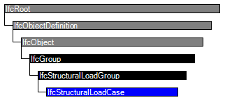

Natural language names
 | Lastfall |
 | Structural Load Case |
| Lastfall |
| Structural Load Case |
| Item | SPF | XML | Change | Description | IFC2x3 to IFC4 |
|---|---|---|---|---|
| IfcStructuralLoadCase | ADDED |
A load case is a load group, commonly used to group loads from the same action source.
HISTORY New entity in IFC4.
| # | Attribute | Type | Cardinality | Description | C |
|---|---|---|---|---|---|
| 11 | SelfWeightCoefficients | IfcRatioMeasure | L[3:3] |
The self weight coefficients specify ratios at which loads due to weight of members shall be included in the load case. These loads are not explicitly modeled as instances of IfcStructuralAction. Instead they shall be calculated according to geometry, section, and material of each member.
The three components of the self weight vector correspond with the x,y,z directions of the so-called global coordinates, i.e. the directions of the shared ObjectPlacement of all items in an IfcStructuralAnalysisModel. For example, if the object placement defines a z axis which is upright like the IfcProject's world coordinate system, then the self weight coefficients would typically be [0.,0.,-1.] in a load case of dead loads with self weight. The overall coefficient in the inherited attribute Coefficient shall not be applied to SelfWeightCoefficients of the same instance of IfcStructuralLoadCase. It only applies to actions and load groups which are grouped below the load case, not to the load case's computed self weight. | X |
| Rule | Description |
|---|---|
| IsLoadCasePredefinedType | An instance of this subtype of structural load group cannot be of any other type than that of a load case. |

| # | Attribute | Type | Cardinality | Description | C |
|---|---|---|---|---|---|
| IfcRoot | |||||
| 1 | GlobalId | IfcGloballyUniqueId | [1:1] | Assignment of a globally unique identifier within the entire software world. | X |
| 2 | OwnerHistory | IfcOwnerHistory | [0:1] |
Assignment of the information about the current ownership of that object, including owning actor, application, local identification and information captured about the recent changes of the object,
NOTE only the last modification in stored - either as addition, deletion or modification. | X |
| 3 | Name | IfcLabel | [0:1] | Optional name for use by the participating software systems or users. For some subtypes of IfcRoot the insertion of the Name attribute may be required. This would be enforced by a where rule. | X |
| 4 | Description | IfcText | [0:1] | Optional description, provided for exchanging informative comments. | X |
| IfcObjectDefinition | |||||
| HasAssignments | IfcRelAssigns @RelatedObjects | S[0:?] | Reference to the relationship objects, that assign (by an association relationship) other subtypes of IfcObject to this object instance. Examples are the association to products, processes, controls, resources or groups. | X | |
| Nests | IfcRelNests @RelatedObjects | S[0:1] | References to the decomposition relationship being a nesting. It determines that this object definition is a part within an ordered whole/part decomposition relationship. An object occurrence or type can only be part of a single decomposition (to allow hierarchical strutures only). | X | |
| IsNestedBy | IfcRelNests @RelatingObject | S[0:?] | References to the decomposition relationship being a nesting. It determines that this object definition is the whole within an ordered whole/part decomposition relationship. An object or object type can be nested by several other objects (occurrences or types). | X | |
| HasContext | IfcRelDeclares @RelatedDefinitions | S[0:1] | References to the context providing context information such as project unit or representation context. It should only be asserted for the uppermost non-spatial object. | X | |
| IsDecomposedBy | IfcRelAggregates @RelatingObject | S[0:?] | References to the decomposition relationship being an aggregation. It determines that this object definition is whole within an unordered whole/part decomposition relationship. An object definitions can be aggregated by several other objects (occurrences or parts). | X | |
| Decomposes | IfcRelAggregates @RelatedObjects | S[0:1] | References to the decomposition relationship being an aggregation. It determines that this object definition is a part within an unordered whole/part decomposition relationship. An object definitions can only be part of a single decomposition (to allow hierarchical strutures only). | X | |
| HasAssociations | IfcRelAssociates @RelatedObjects | S[0:?] | Reference to the relationship objects, that associates external references or other resource definitions to the object.. Examples are the association to library, documentation or classification. | X | |
| IfcObject | |||||
| 5 | ObjectType | IfcLabel | [0:1] |
The type denotes a particular type that indicates the object further. The use has to be established at the level of instantiable subtypes. In particular it holds the user defined type, if the enumeration of the attribute PredefinedType is set to USERDEFINED.
| X |
| IsDeclaredBy | IfcRelDefinesByObject @RelatedObjects | S[0:1] | Link to the relationship object pointing to the declaring object that provides the object definitions for this object occurrence. The declaring object has to be part of an object type decomposition. The associated IfcObject, or its subtypes, contains the specific information (as part of a type, or style, definition), that is common to all reflected instances of the declaring IfcObject, or its subtypes. | X | |
| Declares | IfcRelDefinesByObject @RelatingObject | S[0:?] | Link to the relationship object pointing to the reflected object(s) that receives the object definitions. The reflected object has to be part of an object occurrence decomposition. The associated IfcObject, or its subtypes, provides the specific information (as part of a type, or style, definition), that is common to all reflected instances of the declaring IfcObject, or its subtypes. | X | |
| IsTypedBy | IfcRelDefinesByType @RelatedObjects | S[0:1] | Set of relationships to the object type that provides the type definitions for this object occurrence. The then associated IfcTypeObject, or its subtypes, contains the specific information (or type, or style), that is common to all instances of IfcObject, or its subtypes, referring to the same type. | X | |
| IsDefinedBy | IfcRelDefinesByProperties @RelatedObjects | S[0:?] | Set of relationships to property set definitions attached to this object. Those statically or dynamically defined properties contain alphanumeric information content that further defines the object. | X | |
| IfcGroup | |||||
| IsGroupedBy | IfcRelAssignsToGroup @RelatingGroup | S[0:?] | Reference to the relationship IfcRelAssignsToGroup that assigns the one to many group members to the IfcGroup object. | X | |
| IfcStructuralLoadGroup | |||||
| 6 | PredefinedType | IfcLoadGroupTypeEnum | [1:1] | Selects a predefined type for the load group. It can be differentiated between load groups, load cases, load combinations, or userdefined grouping levels. | X |
| 7 | ActionType | IfcActionTypeEnum | [1:1] | Type of actions in the group. Normally needed if 'PredefinedType' specifies a LOAD_CASE. | X |
| 8 | ActionSource | IfcActionSourceTypeEnum | [1:1] | Source of actions in the group. Normally needed if 'PredefinedType' specifies a LOAD_CASE. | X |
| 9 | Coefficient | IfcRatioMeasure | [0:1] | Load factor. If omitted, a factor is not yet known or not specified. A load factor of 1.0 shall be explicitly exported as Coefficient = 1.0. | X |
| 10 | Purpose | IfcLabel | [0:1] | Description of the purpose of this instance. Among else, possible values of the Purpose of load combinations are 'SLS', 'ULS', 'ALS' to indicate serviceability, ultimate, or accidental limit state. | X |
| SourceOfResultGroup | IfcStructuralResultGroup @ResultForLoadGroup | S[0:1] | Results which were computed using this load group. | X | |
| LoadGroupFor | IfcStructuralAnalysisModel @LoadedBy | S[0:?] | Analysis models in which this load group is used. | X | |
| IfcStructuralLoadCase | |||||
| 11 | SelfWeightCoefficients | IfcRatioMeasure | L[3:3] |
The self weight coefficients specify ratios at which loads due to weight of members shall be included in the load case. These loads are not explicitly modeled as instances of IfcStructuralAction. Instead they shall be calculated according to geometry, section, and material of each member.
The three components of the self weight vector correspond with the x,y,z directions of the so-called global coordinates, i.e. the directions of the shared ObjectPlacement of all items in an IfcStructuralAnalysisModel. For example, if the object placement defines a z axis which is upright like the IfcProject's world coordinate system, then the self weight coefficients would typically be [0.,0.,-1.] in a load case of dead loads with self weight. The overall coefficient in the inherited attribute Coefficient shall not be applied to SelfWeightCoefficients of the same instance of IfcStructuralLoadCase. It only applies to actions and load groups which are grouped below the load case, not to the load case's computed self weight. | X |
Group Assignment
The Group Assignment concept applies to this entity as shown in Table 631.
| ||||
Table 631 — IfcStructuralLoadCase Group Assignment |
| # | Concept | Model View |
|---|---|---|
| IfcRoot | ||
| Software Identity | Common Use Definitions | |
| Revision Control | Common Use Definitions | |
| IfcObject | ||
| Object Occurrence Predefined Type | Common Use Definitions | |
| IfcGroup | ||
| IfcStructuralLoadGroup | ||
| IfcStructuralLoadCase | ||
| Group Assignment | Common Use Definitions | |
<xs:element name="IfcStructuralLoadCase" type="ifc:IfcStructuralLoadCase" substitutionGroup="ifc:IfcStructuralLoadGroup" nillable="true"/>
<xs:complexType name="IfcStructuralLoadCase">
<xs:complexContent>
<xs:extension base="ifc:IfcStructuralLoadGroup">
<xs:attribute name="SelfWeightCoefficients" use="optional">
<xs:simpleType>
<xs:restriction>
<xs:simpleType>
<xs:list itemType="ifc:IfcRatioMeasure"/>
</xs:simpleType>
<xs:minLength value="3"/>
<xs:maxLength value="3"/>
</xs:restriction>
</xs:simpleType>
</xs:attribute>
</xs:extension>
</xs:complexContent>
</xs:complexType>
ENTITY IfcStructuralLoadCase
SUBTYPE OF (IfcStructuralLoadGroup);
SelfWeightCoefficients : OPTIONAL LIST [3:3] OF IfcRatioMeasure;
WHERE
IsLoadCasePredefinedType : SELF\IfcStructuralLoadGroup.PredefinedType = IfcLoadGroupTypeEnum.LOAD_CASE;
END_ENTITY;
 Instance diagram
Instance diagram Link to this page
Link to this page